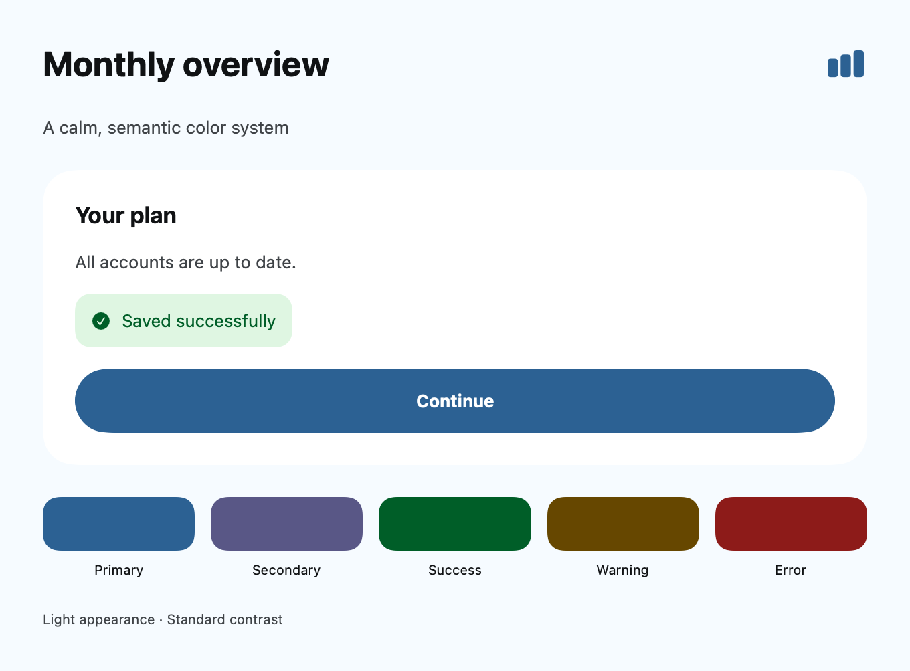
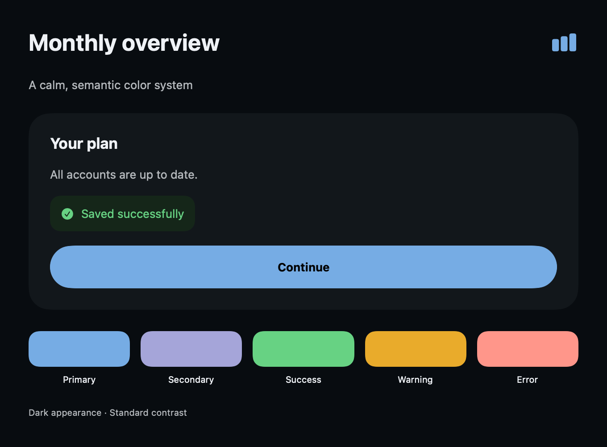

Visual overview
Use the workflow to follow the task, and the architecture map to separate responsibilities. These are conceptual maps; the guide below defines implementation details and verification limits.
- Describe the app
- Derive OKLCH roles
- Validate appearance pairs
- Review asset preview
- Boundary 1Intent and seed
- Boundary 2Pure palette engine
- Boundary 3Asset CLI handoff
Connected responsibilities, not a required class hierarchy or an execution trace.
Context
generate_color_system returns an offline, deterministic preview. It does not call a model, fetch an image, write tokens, or change an asset catalog. An explicit imagePath lets the MCP adapter read a bounded local PNG; the pure generator itself accepts sample colors. This capability is local source work, not a claim about the currently published npm version. Start from the existing design-token contract, and keep native system semantics wherever custom branding adds no value.
Workflow
- Ask for the app task, a seed if available, and the emotional intent. A description is sufficient; do not make users fill every field.
- Generate a preview, inspect the rationale and contrast pairs, then compare it in the app's actual UI.
- Choose or revise the seed, family and harmony. Color meaning depends on the audience; finance is not required to be blue.
- Only when requested, save
assetTokensto a JSON file and run the existing asset generator. It refuses to overwrite a catalog. Review and merge the intended assets. - Build the app, inspect both appearances and Increase Contrast, and test non-color state indicators.
{
"description": "Minimal finance app for young professionals. Calm, trustworthy, premium. Prefer blue.",
"category": "finance",
"mood": ["calm", "trustworthy", "premium"],
"family": "Blue",
"strategy": "dominant-plus-supporting",
"appearance": "both",
"accessibility": "standard"
}
The result includes the seed and its provenance, rationale, all semantic tokens, light/dark palettes, high-contrast variants, eleven-step tonal scales, contrast rows, restrained gradient samples, SwiftUI/UIKit snippets, and compatible asset-token JSON. appearance records a preference; both modes are always returned. oled makes the dark base black but keeps raised surfaces distinguishable.
Inputs and precedence
A valid seed is opaque sRGB #RRGGBB. Priority is primaryColor, first brandColors, existingTokens.primary or .Primary, first existingColors, extracted sample candidate, then the intent heuristic. All values are validated and bounded. Existing tokens are seed input, not an automatic migration preserving every role. Explicit brand input is kept as seed; UI variants may differ to meet measured contrast constraints.
Image samples are { "color": "#2457DB", "weight": 20 } in imageSamples. Read brand extraction before interpreting them. A project reviewer inventory can supply existingColors; project files are never read by the generation tool itself.
Families and strategies
Hue families: Neutral / Minimal, Blue, Indigo, Violet, Purple, Magenta, Teal, Cyan, Green, Emerald, Mint, Yellow, Amber, Orange, Red, Rose, Pink, Brown / Earth, Navy / Midnight, Slate / Graphite.
Treatment families: Pastel, Muted, High Contrast, Monochrome, Gradient-led, Dark OLED, Warm Light, Cool Light, Glass / Translucent, Dynamic Brand, Category-aware palettes. Families are heuristic starting points, not copyrighted themes or a catalog of fixed RGB tables. Some are treatment hints: Glass returns an opaque fallback and material guidance, not a simulated Apple material. High Contrast sets the enhanced contrast target; Gradient-led defaults to restrained gradient. Both can also be requested with the explicit accessibility and strategy inputs.
Available harmonies are monochromatic, analogous, complementary, split-complementary, triadic, neutral-plus-accent, dominant-plus-supporting and restrained gradient. Supporting hues use limited chroma. The intent hash varies automatic seeds within the suggested hue area, so a category does not force a single color. Free-form categories and moods are accepted; heuristics recognize broad groups and fall back to restrained neutrals. There is no semantic language model interpreting every word.
Perceptual derivation
sRGB is decoded to linear RGB, converted to OKLab/OKLCH, and mapped back to sRGB by reducing out-of-gamut chroma while holding lightness and hue. Tonal steps are 50, 100, 200, 300, 400, 500, 600, 700, 800, 900 and 950, with intentionally tapered chroma at the ends. Near-neutral colors have unstable perceptual hue; they are treated as neutrals.
Contrast repair searches lightness while preserving hue and as much chroma as the gamut allows. This is an engineering constraint, not proof of visual quality. Gradient stops follow a short OKLCH hue arc; stop samples do not prove contrast at every rendered pixel or interpolation space. Use gradients decoratively unless the rendered foreground has been verified.
Implementation
The returned implementation strings define named-color accessors. Add assets to the same target that loads them. For a Swift package pass its resource bundle explicitly; see samples/ColorSystem.
Text("Continue")
.foregroundStyle(AppColors.onPrimary)
.padding()
.background(AppColors.primary)
Do not apply onPrimary to an arbitrary gradient, disabled fill or destructive fill. Each is a separate foreground/background relationship. Use native Button(role: .destructive) when possible.
Verification
Regression tests cover determinism, all families, token completeness, gamut output, tonal ordering, OLED and high contrast, input bounds, image-sample filtering and direct project evidence. They do not establish beauty, cultural meaning, native material behavior or App Review acceptance.
Native preview
These SwiftUI renders use the sample's compiled named-color assets on macOS. They show the sample palette, not an iOS Simulator acceptance test. Reproduce with samples/ColorSystem/render-preview.swift; see the sample README for the asset compilation step.


The perceptual math follows the published OKLab definition; no third-party palette branding or fixed theme was copied.